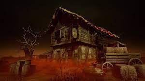

Maps
A localização da partida é escolhida pela Entidade. Jogadores podem influenciá-la queimando certas Oferendas. As localidades das partidas têm pontos de referência específicos, mas elementos como lugar de início dos jogadores, Geradores, Baús, Armários, Totens e Portões de Saída são gerados aos caprichos da Entidade. Até o terreno em si muda de partida para partida.
